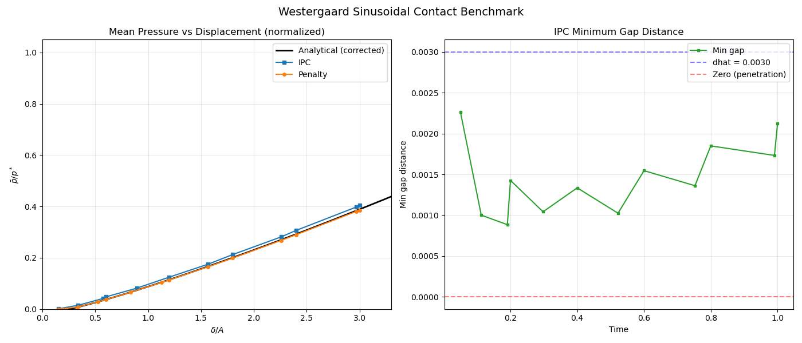

Note
Go to the end to download the full example code.
Westergaard sinusoidal contact benchmark: IPC vs penalty
Validates both IPC and penalty contact against the exact Westergaard analytical solution for periodic sinusoidal contact (plane strain).
A rigid flat plate is pressed onto an elastic body whose top surface has
a sinusoidal profile \(z(x) = A \cos(2 \pi x / \lambda)\). One
wavelength is modelled with DispX = 0 on both lateral faces, which is
exact for this symmetric profile and equivalent to periodic conditions
without mean lateral strain.
Analytical formulas (Westergaard 1939, Johnson 1985), parametric in the contact half-width \(a\):
complete contact pressure: \(p^* = \pi E^* A / \lambda\);
mean pressure: \(\bar{p} = p^* \sin^2(\pi a / \lambda)\);
mean surface displacement (from ContactMechanics):
\[d(a) = 2A \left[ -\frac{1}{2} + \frac{1}{2} \cos^2 \frac{\pi a}{\lambda} + \sin^2 \frac{\pi a}{\lambda} \, \ln \left( \sin \frac{\pi a}{\lambda} \right) \right];\]finite block of height \(H\): the uniform part of the pressure compresses the block in uniaxial strain, adding \(\bar{p} H / M\) to the plate descent, with the constrained modulus \(M = E (1-\nu) / ((1+\nu)(1-2\nu)) = E^* (1-\nu)^2 / (1-2\nu)\).
The problem is solved twice (IPC, then penalty) on an 80 x 80 grid.
Note
The IPC method requires the ipctk package:
pip install ipctk or pip install fedoo[ipc].

==============================================================
IPC CONTACT (Westergaard sinusoidal benchmark)
==============================================================
Iter 1 - Time: 0.05000 - dt 0.05000 - NR iter: 4 - Err: 0.00007
Iter 2 - Time: 0.11250 - dt 0.06250 - NR iter: 5 - Err: 0.00285
Iter 3 - Time: 0.19062 - dt 0.07812 - NR iter: 4 - Err: 0.00033
Iter 4 - Time: 0.20000 - dt 0.09766 - NR iter: 4 - Err: 0.00039
Iter 5 - Time: 0.29766 - dt 0.09766 - NR iter: 3 - Err: 0.00220
Iter 6 - Time: 0.40000 - dt 0.12207 - NR iter: 3 - Err: 0.00088
Iter 7 - Time: 0.52207 - dt 0.12207 - NR iter: 3 - Err: 0.00147
Iter 8 - Time: 0.60000 - dt 0.15259 - NR iter: 3 - Err: 0.00316
Iter 9 - Time: 0.75259 - dt 0.15259 - NR iter: 3 - Err: 0.00287
Iter 10 - Time: 0.80000 - dt 0.19073 - NR iter: 4 - Err: 0.00068
Iter 11 - Time: 0.99073 - dt 0.19073 - NR iter: 3 - Err: 0.00413
Iter 12 - Time: 1.00000 - dt 0.23842 - NR iter: 4 - Err: 0.00190
IPC solve time: 3.77 s
==============================================================
PENALTY CONTACT (Westergaard sinusoidal benchmark)
==============================================================
Iter 1 - Time: 0.05000 - dt 0.05000 - NR iter: 2 - Err: 0.00000
Iter 2 - Time: 0.11250 - dt 0.06250 - NR iter: 6 - Err: 0.00000
Iter 3 - Time: 0.17500 - dt 0.06250 - NR iter: 4 - Err: 0.00000
Iter 4 - Time: 0.20000 - dt 0.07812 - NR iter: 2 - Err: 0.00000
Iter 5 - Time: 0.27813 - dt 0.07812 - NR iter: 4 - Err: 0.00000
Iter 6 - Time: 0.37578 - dt 0.09766 - NR iter: 4 - Err: 0.00000
Iter 7 - Time: 0.40000 - dt 0.12207 - NR iter: 2 - Err: 0.00000
Iter 8 - Time: 0.52207 - dt 0.12207 - NR iter: 3 - Err: 0.00472
Iter 9 - Time: 0.60000 - dt 0.15259 - NR iter: 3 - Err: 0.00456
Iter 10 - Time: 0.75259 - dt 0.15259 - NR iter: 4 - Err: 0.00064
Iter 11 - Time: 0.80000 - dt 0.19073 - NR iter: 3 - Err: 0.00002
Iter 12 - Time: 0.99073 - dt 0.19073 - NR iter: 4 - Err: 0.00007
Iter 13 - Time: 1.00000 - dt 0.23842 - NR iter: 2 - Err: 0.00402
Penalty solve time: 3.89 s
==============================================================
PERFORMANCE COMPARISON: IPC vs Penalty
==============================================================
Metric IPC Penalty
------------------------------------------------------------------
Total solve time 3.77 s 3.89 s
Total increments 12 13
Final reaction Fy -27.9804 -26.6296
p* (analytical) 69.0460 69.0460
IPC min gap distance 8.84e-04 N/A
IPC final kappa 1.09e+07 N/A
--------------------------------------------------------------
Per-increment detail: IPC
--------------------------------------------------------------
Inc Time Reaction Fy Collisions Min gap Kappa
1 0.0500 -0.0887 22 2.27e-03 1.70e+05
2 0.1125 -1.0270 40 1.00e-03 3.40e+05
3 0.1906 -2.8494 52 8.84e-04 6.81e+05
4 0.2000 -3.2796 50 1.43e-03 6.81e+05
5 0.2977 -5.6345 62 1.04e-03 1.36e+06
6 0.4000 -8.6028 68 1.33e-03 1.36e+06
7 0.5221 -12.0730 78 1.02e-03 2.72e+06
8 0.6000 -14.6713 76 1.55e-03 2.72e+06
9 0.7526 -19.4242 84 1.36e-03 5.45e+06
10 0.8000 -21.1701 82 1.85e-03 5.45e+06
11 0.9907 -27.4946 90 1.73e-03 1.09e+07
12 1.0000 -27.9804 86 2.13e-03 1.09e+07
--------------------------------------------------------------
Per-increment detail: PENALTY
--------------------------------------------------------------
Inc Time Reaction Fy
1 0.0500 -0.0000
2 0.1125 -0.5542
3 0.1750 -1.9550
4 0.2000 -2.5531
5 0.2781 -4.5372
6 0.3758 -7.1753
7 0.4000 -7.8519
8 0.5221 -11.3829
9 0.6000 -13.7250
10 0.7526 -18.4859
11 0.8000 -20.0113
12 0.9907 -26.3143
13 1.0000 -26.6296
Benchmark plot saved to results/westergaard_benchmark.png
import fedoo as fd
import numpy as np
import os
from time import time
if "__file__" in globals():
os.chdir(os.path.dirname(os.path.abspath(__file__)))
# =========================================================================
# Parameters
# =========================================================================
lam = 1.0 # wavelength
A = 0.02 # amplitude (2% of wavelength)
H = 2.0 # elastic block height (2*lam)
H_rigid = 0.1 # rigid plate thickness
gap = 0.005 # initial gap between peak and plate
E = 1000.0
nu = 0.3
E_star = E / (1.0 - nu**2) # plane strain modulus
E_rigid = 1e6 # quasi-rigid
nu_rigid = 0.3
p_star = np.pi * E_star * A / lam # complete contact pressure
# Mesh resolution
nx = 80
ny_block = 80
ny_plate = 2
# Prescribed displacement at tmax=1
delta_max = 0.06 # total descent of rigid plate top
# =========================================================================
# Analytical solution (parametric in contact half-width a)
# =========================================================================
def westergaard_analytical(lam, A, gap, E_star, nu, H_block=None):
"""Return (delta_ana, p_bar_ana) arrays parametric in a.
If H_block is given, adds the finite-block bulk compression correction:
delta_total = gap - d_mean + p_bar * H / M
with M = E(1-nu)/((1+nu)(1-2nu)) = E_star (1-nu)^2/(1-2nu) the constrained
(oedometric) modulus, computed from the arguments E_star and nu:
under plane strain with DispX = 0 on the lateral faces, the uniform part
of the pressure compresses the block in uniaxial strain. The semi-infinite
half-space solution does not include this compliance.
"""
p_star_val = np.pi * E_star * A / lam
a = np.linspace(0.001, 0.499, 500) * lam
s = np.sin(np.pi * a / lam)
c = np.cos(np.pi * a / lam)
p_bar = p_star_val * s**2
# Mean surface displacement (compression into the block)
d_mean = 2.0 * A * (-0.5 + 0.5 * c**2 + s**2 * np.log(s))
# Rigid plate descent = gap closure + elastic compression + bulk
delta = gap - d_mean
if H_block is not None:
M = E_star * (1.0 - nu) ** 2 / (1.0 - 2.0 * nu)
delta += p_bar * H_block / M
return delta, p_bar, p_star_val
# =========================================================================
# Helpers
# =========================================================================
def add_symmetry_bc(pb, mesh):
"""Apply DispX=0 on left/right faces — exact for the cosine symmetry.
The cosine surface z = A*cos(2*pi*x/lam) has mirror symmetry about
x=0 and x=lam/2, so u_x = 0 at x=0 and x=lam. This is equivalent
to periodic BC with E_xx=0 for this specific geometry.
"""
nodes_left = mesh.find_nodes("X", 0)
nodes_right = mesh.find_nodes("X", lam)
pb.bc.add("Dirichlet", nodes_left, "DispX", 0)
pb.bc.add("Dirichlet", nodes_right, "DispX", 0)
def filter_surface_no_lateral(surf_mesh, vol_mesh, tol=1e-8):
"""Remove surface edges on left/right boundaries (x=0 or x=lam).
This prevents IPC from detecting spurious contacts between vertical
edges of the stacked bodies.
"""
nodes = vol_mesh.nodes
keep = []
for i, elem in enumerate(surf_mesh.elements):
xs = nodes[elem, 0]
# Drop edge if all nodes are on left OR all on right boundary
if np.all(np.abs(xs) < tol) or np.all(np.abs(xs - lam) < tol):
continue
keep.append(i)
if len(keep) == len(surf_mesh.elements):
return surf_mesh # nothing to filter
from fedoo.core.mesh import Mesh
new_elements = surf_mesh.elements[keep]
return Mesh(nodes, new_elements, surf_mesh.elm_type, name="filtered_surface")
# =========================================================================
# Mesh and material builder
# =========================================================================
def build_mesh_and_material():
"""Build two-body mesh (elastic block + rigid plate) with sinusoidal top.
Returns (mesh, material, nodes_bottom, nodes_top_plate, n_block).
"""
fd.ModelingSpace("2D")
# --- Elastic block ---
mesh_block = fd.mesh.rectangle_mesh(
nx=nx + 1,
ny=ny_block + 1,
x_min=0,
x_max=lam,
y_min=0,
y_max=H,
elm_type="tri3",
)
# Sinusoidal deformation of top surface (blended through height)
nodes = mesh_block.nodes
nodes[:, 1] += A * np.cos(2 * np.pi * nodes[:, 0] / lam) * (nodes[:, 1] / H)
mesh_block.element_sets["block"] = np.arange(mesh_block.n_elements)
# --- Rigid flat plate ---
y_plate_bot = H + A + gap
y_plate_top = y_plate_bot + H_rigid
mesh_plate = fd.mesh.rectangle_mesh(
nx=nx + 1,
ny=ny_plate + 1,
x_min=0,
x_max=lam,
y_min=y_plate_bot,
y_max=y_plate_top,
elm_type="tri3",
)
mesh_plate.element_sets["plate"] = np.arange(mesh_plate.n_elements)
# --- Stack ---
n_block = mesh_block.n_nodes
mesh = fd.Mesh.stack(mesh_block, mesh_plate)
# Node sets
nodes_bottom = mesh.find_nodes("Y", 0)
nodes_top_plate = mesh.find_nodes("Y", y_plate_top)
# --- Material (heterogeneous) ---
mat_block = fd.constitutivelaw.ElasticIsotrop(E, nu)
mat_plate = fd.constitutivelaw.ElasticIsotrop(E_rigid, nu_rigid)
material = fd.constitutivelaw.Heterogeneous(
(mat_block, mat_plate),
("block", "plate"),
)
return mesh, material, nodes_bottom, nodes_top_plate, n_block
# =========================================================================
# Approach 1: IPC contact
# =========================================================================
print("=" * 62)
print(" IPC CONTACT (Westergaard sinusoidal benchmark)")
print("=" * 62)
mesh, material, nodes_bottom, nodes_top_plate, n_block = build_mesh_and_material()
# Extract surface and remove left/right edges to avoid spurious contacts
surf_raw = fd.mesh.extract_surface(mesh)
surf_ipc = filter_surface_no_lateral(surf_raw, mesh)
ipc_contact = fd.constraint.IPCContact(
mesh,
surface_mesh=surf_ipc,
dhat=0.003,
dhat_is_relative=False,
friction_coefficient=0.0,
use_ccd=True,
)
wf = fd.weakform.StressEquilibrium(material, nlgeom=False)
solid = fd.Assembly.create(wf, mesh)
assembly = fd.Assembly.sum(solid, ipc_contact)
pb_ipc = fd.problem.NonLinear(assembly)
if not os.path.isdir("results"):
os.mkdir("results")
pb_ipc.add_output("results/westergaard_ipc", solid, ["Disp", "Stress"])
# Fix bottom of elastic block
pb_ipc.bc.add("Dirichlet", nodes_bottom, "Disp", 0)
# Prescribe vertical displacement on top of rigid plate
pb_ipc.bc.add("Dirichlet", nodes_top_plate, "DispY", -delta_max)
# Symmetry: DispX=0 on left/right faces (exact for cosine geometry)
add_symmetry_bc(pb_ipc, mesh)
pb_ipc.set_nr_criterion("Displacement", tol=5e-3, max_subiter=15)
# --- Tracking ---
history_ipc = {
"time": [],
"reaction_y": [],
"n_collisions": [],
"kappa": [],
"min_distance": [],
}
def track_ipc(pb):
history_ipc["time"].append(pb.time)
F = pb.get_ext_forces("Disp")
history_ipc["reaction_y"].append(np.sum(F[1, nodes_top_plate]))
history_ipc["n_collisions"].append(len(ipc_contact._collisions))
history_ipc["kappa"].append(ipc_contact._kappa)
# True minimum distance (ipctk returns squared distances)
verts = ipc_contact._get_current_vertices(pb)
history_ipc["min_distance"].append(ipc_contact._minimum_distance(verts))
t0 = time()
pb_ipc.nlsolve(
dt=0.05,
tmax=1,
update_dt=True,
print_info=1,
interval_output=0.2,
callback=track_ipc,
exec_callback_at_each_iter=True,
)
ipc_time = time() - t0
print(f"\nIPC solve time: {ipc_time:.2f} s")
# =========================================================================
# Approach 2: Penalty contact
# =========================================================================
print("\n" + "=" * 62)
print(" PENALTY CONTACT (Westergaard sinusoidal benchmark)")
print("=" * 62)
mesh2, material2, nodes_bottom2, nodes_top_plate2, n_block2 = build_mesh_and_material()
# Slave nodes: top of elastic block (sinusoidal surface)
surf_block = fd.mesh.extract_surface(mesh2.extract_elements("block"))
block_boundary = set(np.unique(surf_block.elements).tolist())
nodes_block_top = np.array(
[
n
for n in block_boundary
if mesh2.nodes[n, 1] > H * 0.9 # top ~10% of block
]
)
# Master surface: bottom of rigid plate
surf_plate = fd.mesh.extract_surface(mesh2.extract_elements("plate"))
penalty_contact = fd.constraint.Contact(
nodes_block_top,
surf_plate,
search_algorithm="bucket",
)
penalty_contact.contact_search_once = False
penalty_contact.eps_n = 1e5
penalty_contact.max_dist = gap + A + 0.01
wf2 = fd.weakform.StressEquilibrium(material2, nlgeom=False)
solid2 = fd.Assembly.create(wf2, mesh2)
assembly2 = fd.Assembly.sum(solid2, penalty_contact)
pb_penalty = fd.problem.NonLinear(assembly2)
pb_penalty.add_output("results/westergaard_penalty", solid2, ["Disp", "Stress"])
# Fix bottom of elastic block
pb_penalty.bc.add("Dirichlet", nodes_bottom2, "Disp", 0)
# Prescribe vertical displacement on top of rigid plate
pb_penalty.bc.add("Dirichlet", nodes_top_plate2, "DispY", -delta_max)
# Symmetry: DispX=0 on left/right faces
add_symmetry_bc(pb_penalty, mesh2)
pb_penalty.set_nr_criterion("Displacement", tol=5e-3, max_subiter=15)
# --- Tracking ---
history_penalty = {"time": [], "reaction_y": []}
def track_penalty(pb):
history_penalty["time"].append(pb.time)
F = pb.get_ext_forces("Disp")
history_penalty["reaction_y"].append(np.sum(F[1, nodes_top_plate2]))
t0 = time()
pb_penalty.nlsolve(
dt=0.05,
tmax=1,
update_dt=True,
print_info=1,
interval_output=0.2,
callback=track_penalty,
exec_callback_at_each_iter=True,
)
penalty_time = time() - t0
print(f"\nPenalty solve time: {penalty_time:.2f} s")
# =========================================================================
# Comparison summary
# =========================================================================
print("\n")
print("=" * 62)
print(" PERFORMANCE COMPARISON: IPC vs Penalty")
print("=" * 62)
rows = [
("Total solve time", f"{ipc_time:.2f} s", f"{penalty_time:.2f} s"),
(
"Total increments",
str(len(history_ipc["time"])),
str(len(history_penalty["time"])),
),
(
"Final reaction Fy",
f"{history_ipc['reaction_y'][-1]:.4f}" if history_ipc["reaction_y"] else "N/A",
f"{history_penalty['reaction_y'][-1]:.4f}"
if history_penalty["reaction_y"]
else "N/A",
),
("p* (analytical)", f"{p_star:.4f}", f"{p_star:.4f}"),
(
"IPC min gap distance",
f"{min(d for d in history_ipc['min_distance'] if np.isfinite(d)):.2e}"
if any(np.isfinite(d) for d in history_ipc["min_distance"])
else "inf",
"N/A",
),
(
"IPC final kappa",
f"{history_ipc['kappa'][-1]:.2e}" if history_ipc["kappa"] else "N/A",
"N/A",
),
]
w_label, w_val = 28, 18
print(f"{'Metric':<{w_label}} {'IPC':>{w_val}} {'Penalty':>{w_val}}")
print("-" * (w_label + 2 * w_val + 2))
for label, v_ipc, v_pen in rows:
print(f"{label:<{w_label}} {v_ipc:>{w_val}} {v_pen:>{w_val}}")
print()
# =========================================================================
# Per-increment detail: IPC
# =========================================================================
print("-" * 62)
print(" Per-increment detail: IPC")
print("-" * 62)
print(
f"{'Inc':>4} {'Time':>8} {'Reaction Fy':>14} "
f"{'Collisions':>11} {'Min gap':>12} {'Kappa':>12}"
)
for i in range(len(history_ipc["time"])):
min_d = history_ipc["min_distance"][i]
min_d_str = f"{min_d:.2e}" if np.isfinite(min_d) else "inf"
print(
f"{i + 1:4d} {history_ipc['time'][i]:8.4f} "
f"{history_ipc['reaction_y'][i]:14.4f} "
f"{history_ipc['n_collisions'][i]:11d} "
f"{min_d_str:>12} "
f"{history_ipc['kappa'][i]:12.2e}"
)
print()
# =========================================================================
# Per-increment detail: Penalty
# =========================================================================
print("-" * 62)
print(" Per-increment detail: PENALTY")
print("-" * 62)
print(f"{'Inc':>4} {'Time':>8} {'Reaction Fy':>14}")
for i in range(len(history_penalty["time"])):
print(
f"{i + 1:4d} {history_penalty['time'][i]:8.4f} "
f"{history_penalty['reaction_y'][i]:14.4f}"
)
print()
# =========================================================================
# Plots: numerical vs analytical
# =========================================================================
try:
import matplotlib.pyplot as plt
delta_ana, p_bar_ana, _ = westergaard_analytical(lam, A, gap, E_star, nu, H_block=H)
fig, axes = plt.subplots(1, 2, figsize=(14, 6))
fig.suptitle("Westergaard Sinusoidal Contact Benchmark", fontsize=14)
# --- Normalized pressure vs displacement ---
ax = axes[0]
ax.plot(
delta_ana / A,
p_bar_ana / p_star,
"k-",
linewidth=2,
label="Analytical (corrected)",
)
# IPC results
if history_ipc["reaction_y"]:
delta_ipc = np.array(history_ipc["time"]) * delta_max
# Mean pressure = -reaction_y / lam (reaction is negative for compression)
p_bar_ipc = -np.array(history_ipc["reaction_y"]) / lam
ax.plot(
delta_ipc / A,
p_bar_ipc / p_star,
"s-",
color="tab:blue",
markersize=4,
label="IPC",
)
# Penalty results
if history_penalty["reaction_y"]:
delta_pen = np.array(history_penalty["time"]) * delta_max
p_bar_pen = -np.array(history_penalty["reaction_y"]) / lam
ax.plot(
delta_pen / A,
p_bar_pen / p_star,
"o-",
color="tab:orange",
markersize=4,
label="Penalty",
)
ax.set_xlabel(r"$\delta / A$")
ax.set_ylabel(r"$\bar{p} / p^*$")
ax.set_title("Mean Pressure vs Displacement (normalized)")
ax.legend()
ax.grid(True, alpha=0.3)
# Clip to numerical data range
max_delta_A = delta_max / A * 1.1
ax.set_xlim(0, max_delta_A)
ax.set_ylim(bottom=0)
# --- IPC-specific: min gap and kappa ---
ax = axes[1]
finite_gaps = [
(t, d)
for t, d in zip(history_ipc["time"], history_ipc["min_distance"])
if np.isfinite(d)
]
if finite_gaps:
t_gap, d_gap = zip(*finite_gaps)
ax.plot(t_gap, d_gap, "s-", color="tab:green", markersize=3, label="Min gap")
if hasattr(ipc_contact, "_actual_dhat") and ipc_contact._actual_dhat is not None:
ax.axhline(
y=ipc_contact._actual_dhat,
color="blue",
linestyle="--",
alpha=0.5,
label=f"dhat = {ipc_contact._actual_dhat:.4f}",
)
ax.axhline(y=0, color="red", linestyle="--", alpha=0.5, label="Zero (penetration)")
ax.set_xlabel("Time")
ax.set_ylabel("Min gap distance")
ax.set_title("IPC Minimum Gap Distance")
ax.legend()
ax.grid(True, alpha=0.3)
plt.tight_layout()
plt.savefig("results/westergaard_benchmark.png", dpi=150)
print("Benchmark plot saved to results/westergaard_benchmark.png")
plt.show()
except ImportError:
print("matplotlib not available -- skipping plots.")
# The final deformed configurations can be plotted with
# res_ipc.plot("Stress", "vm", "Node") and res_penalty.plot(...).
Total running time of the script: (0 minutes 8.235 seconds)